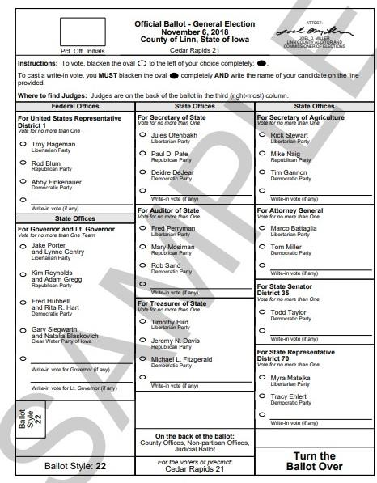
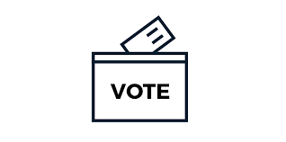

Importance of Voting
Voting is a key element of a democracy that keeps the nation’s governmental system working. It is a fundamental right given to every citizen in order to let them have a say in choosing the person that will represent them. In order for the result to be the most accurate, every single person must vote. It may sound intimidating if one is doing it for the first time and so here at PC we are providing you with all you need to know about the process- from what to expect to multiple resources- to help you through it.
What to Expect
After arriving at your voting center, you must state your name, address, and date of birth to an election official. Next, you will be asked for identification. (examples include current photo ID, utility bill, bank statement or anything other government document with your name and address) You will then be given a ballot, which is shown to the right. Next, enter a voting booth and mark the ballot according to the instructions and in no other way. Once finished, deposit the ballot in the ballot box or scanner. Then, immediately depart the polling site. If you request assistance, you will be directed to a voting machine equipped for use by persons with disabilities and vote without assistance, or you will be assisted by two election officials in marking your ballot (one election official to assist the voter and one to observe without comment or interpretation). You will never be allowed to remove your ballot from the polling center. If you spoil your ballot you will be provided with another, but no more than three ballots in total.
Voting Resources
 |
 | ||||
| Register | Find Your Poll | Get Absentee Ballot | Election Reminders | Volunteer | Other Information |
Polling Locations Near You